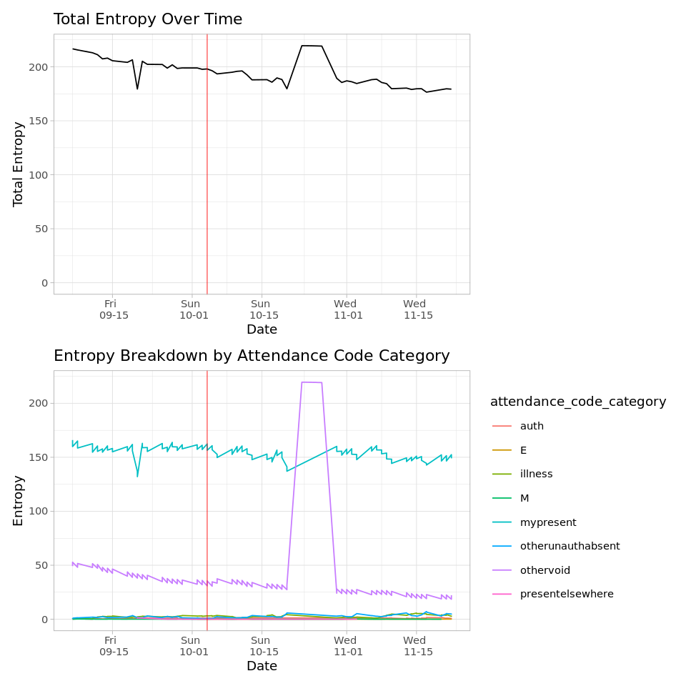
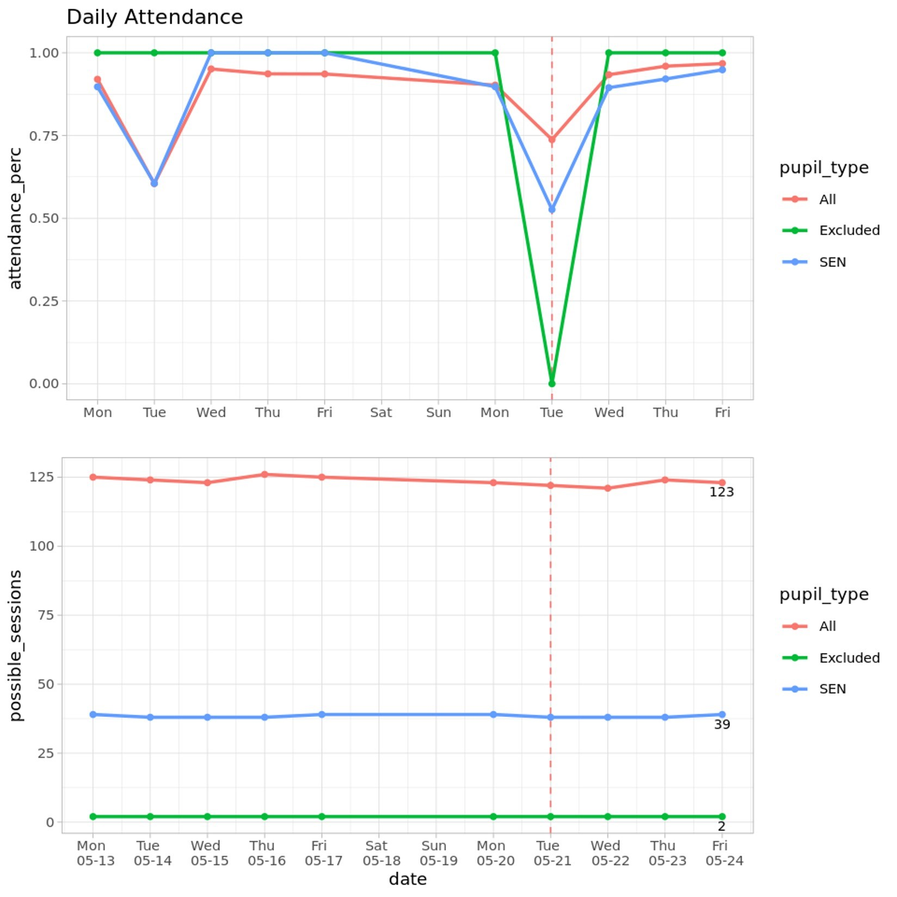

A technical presentation - 14th March 2025
Department for Education
Policy customers - school accountability.
Data experts - daily attendance data modelers.
git merge when combining branches to retain the commit history of development branches.Understanding the daily attendance data model
Exploratory data analysis
Data cleaning - large dataset so investigative
Entropy measures the likelihood of certain attendance codes occurring on a given day, with less likely codes having higher entropy.
Calculated as Shannon’s entropy:
\[\begin{gather*} H(X_{j,t}) = -\sum_{i = 0}^Np(x_{k, j, t})\log_2p(x_{k, j, t}) \end{gather*}\]
Total entropy in school \(j\) for session \(t\) is equal to the sum for all \(N\) pupils of the pupil’s probability of having attendance code \(x_{k,j,t}\) times by the log of that probability.
Code probabilities are modeled as a Dirichlet distributed random variable such that probabilities sum to 1 on any given session.
Probabilities are estimated using Bayesian updating on a pupil level, so a pupil’s most common code has the highest probability.
Drawbacks of this methodology:
Processing load: Intensive as we re-calculate a pupil’s code probability each session – with ~9 million pupils that’s 18 million sessions per day!
rdirichlet() function from the MCMCpack library but later changed to caculating in spark SQL to allow for efficient querying using spark’s distributed processing.Example of an entropy output for one school broken down by specific attendance codes.

The adjusted model flagged schools for further analysis after ofsted visits, and raised significantly less false positives. Benefits:

Slides built from the DfE analytical services’ Quarto template
Attendance Analysis